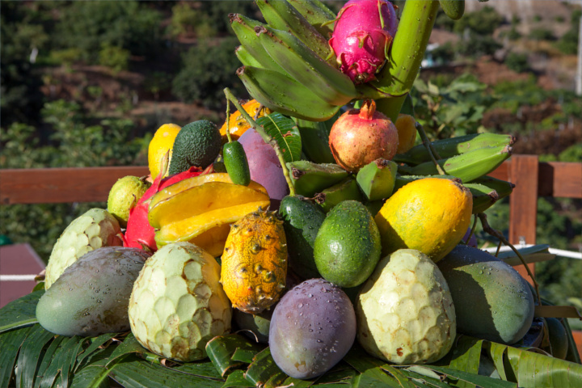

Save The Plants


Gastronomy of the coast
The coast of the current Costa Tropical of Granada, a region with a millennia-old history, has contemplated since Antiquity the disembarkation in its idyllic beaches, converted today into one of its main tourist attractions, of numerous civilizations that have left their mark. Of her the found archaeological rest, Phoenician necropolis, numerous watchtowers or the castles from which the orchards and the cultures in terraces are contemplated.

Fish and seafood
The cuisine of this region owes much to the large range of fresh fish and seafood with which, century after century, the Mediterranean has provided its different locations. In its populous markets you can find the shrimps, prawns and crayfish so typical of the area, as well as all kinds of fish. From the most common - fish, snapper, bream, sea bream and sea bass - to other more unusual ones such as congers, groupers or rays that are prepared in restaurants of varied and exquisite shapes. Phoenicians, Romans, Greeks and Muslims have left their mark on the Granada coast. From the salting techniques, introduced by the Phoenicians and improved by the Romans, to the love for the vegetable garden and the vegetables that the Muslims inherited from the Greeks, cultural miscegenation has shaped the gastronomy of these coasts. The popular zalamandroña soup is a good example of this.

Tropical fruits
From America, along with foods such as potatoes, peppers or tomatoes, also came from the hand of the first Spanish explorers, tropical fruit species. The similar climate of the Granada coast has allowed plantations of tropical products to bear fruit in this area, abounding mango, medlar, guava, avocado and custard apple plantations, and recipes that mix these flavors with more traditional products.
"Costa" wine
Albuñol also produces "Costa" wine, while the small Bodega Horacio Calvente, located in Jete but with its vineyards in the Sierra de Cázulas, is producing high quality reds and whites. The cane rum that is made in Motril is a great digestive to finish the table.